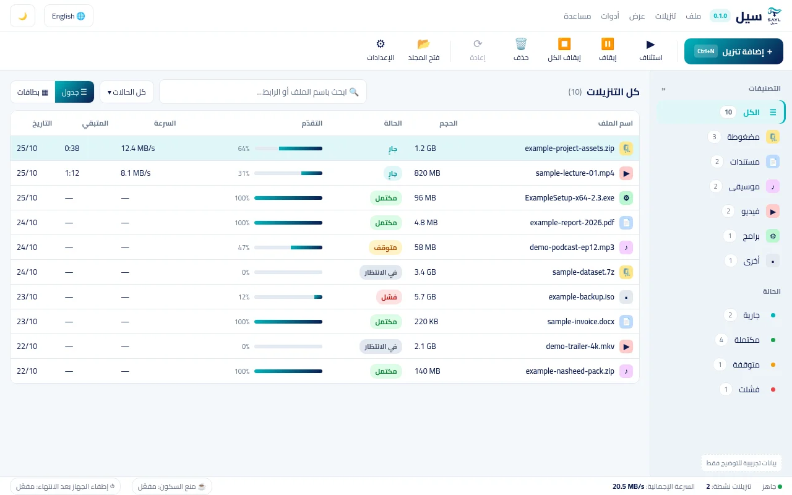

اختر لغة الموقع · Choose Language
يمكنك تغيير اللغة في أي وقت من زر التبديل بأعلى الصفحة.
يمكنك تغيير اللغة في أي وقت من زر التبديل بأعلى الصفحة.
يقسّم سيل الملف على عدة اتصالات متوازية في وقت واحد، وإذا انقطع الإنترنت أو أغلقت الجهاز، يكمل التنزيل بدقة من آخر بايت وصل.
بلا نوافذ منبثقة مزعجة، وبلا إعلانات، وبالعربية أولاً مع دعم كامل للإنجليزية والوضعين الفاتح والداكن.

صُمم ليحل مشكلات التنزيل الحقيقية على ويندوز: سرعة أعلى، استئناف موثوق، وتجربة تحترم وقتك وخصوصيتك.
يُقسَم الملف إلى عدة أجزاء متوازية ينزل كل منها عبر اتصال مستقل، لاستغلال أقصى سرعة يوفرها اتصالك بالإنترنت.
انقطع الإنترنت أو أُغلق الجهاز؟ يحفظ سيل نقاط التقدم في ملف مؤقت (.part) ويكمل من آخر بايت مسجل دون إعادة تنزيل ما اكتمل.
واجهة مكتوبة بعناية تبدأ بالعربية من اليمين إلى اليسار، مع خط مريح للقراءة وإمكانية التبديل إلى الإنجليزية في أي لحظة.
تنظيم فوري للتنزيلات المكتملة في تصنيفات عملية (برامج، وسائط، مضغوطة...) مع شريط بحث سريع للوصول المباشر.
أداة CLI مستقلة (sayl.exe) تتيح إدارة التنزيلات والأتمتة من سطر الأوامر أو نصوص PowerShell البرمجية.
يعمل سيل بخفة في شريط المهام (System Tray)، وينبهك عند اكتمال التحميل مع خيار إطفاء الحاسوب تلقائياً.
التقط التنزيلات بضغطة زر واحدة من Chrome وEdge وBrave عبر إضافة المتصفح الرسمية، أو تحكم بمحرك التنزيل كاملاً من Terminal عبر أمر sayl البسيط والمبني بلغة Rust.
تكامل أصيل مع yt-dlp ونظام إضافات معياري لمواقع الفيديو والتواصل الاجتماعي لحفظ المقاطع بدقة 4K أو استخراج الصوت وحده.